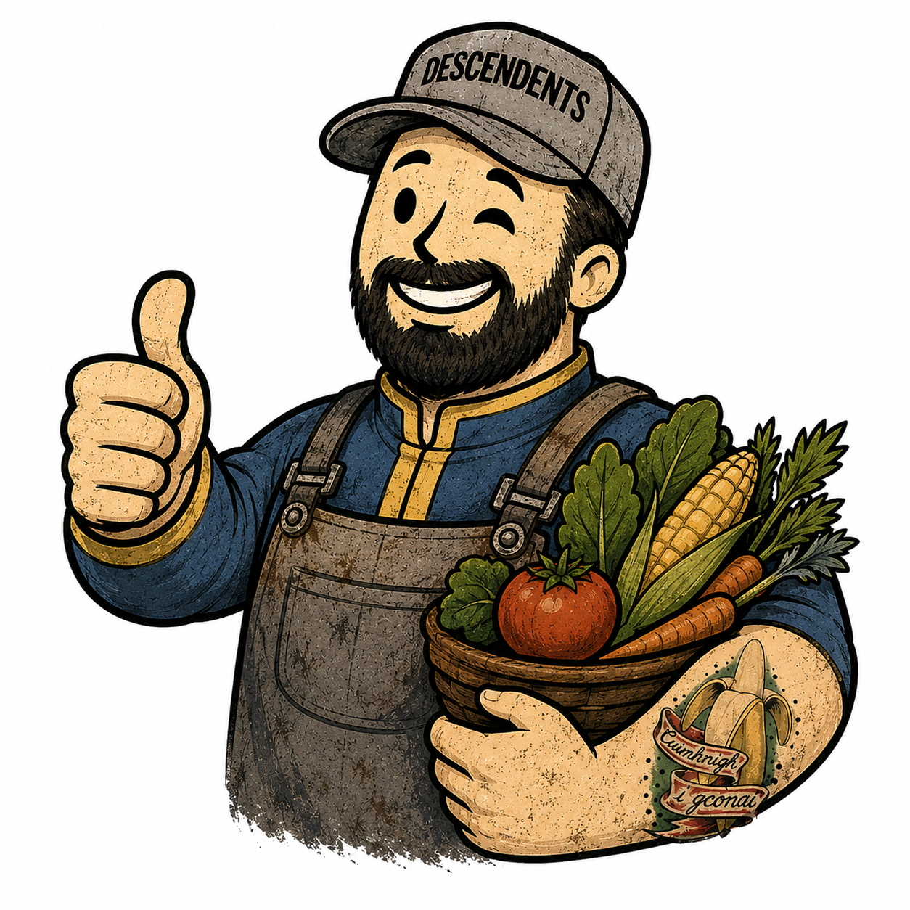

VAULT-TEC AGRICULTURAL TERMINAL
VAULT 73
FIELD OPS
“War never changes. Fertilizer schedules do.”

👨🌾👍Overseer of Vault 73 says:Daily orders, harvest checks, and weather warnings update from the calendar and Riverview forecast.
RegionRiverview, NB
Frost-Safe TargetEarly June
ModeMixed Garden Planner
Calendar—
FilterAll
GARDEN CONDITIONS
NowLoading…
Tonight Low—
Tomorrow High—
ConditionChecking…
GARDEN CONDITIONSSTANDBY
❄️ FROST🧊 COLD✅ IDEAL☀️ HOT🔥 DANGER
STAT // ACTIVE QUESTS
Month
🍅 San Marzano
🍒 Cherry Tomatoes
🫑 Sweet Red Peppers
🥒 Cucumbers
Peas
🍟 Yellow Wax Beans
🟡 Golden Beets
🧄 Garlic
🌿 Thai Basil
🌱 Chives
🥬 Spinach
🌱 Mint
🌿 Summer Savory
STAT // GARDEN ALERTS
Checking Riverview forecast…Cold, heat, watering, and shade alerts will appear here.
CROP // FRUITING CONTROL
CROP // FIELD ROSTER
DATA // QUICK REFERENCE
DATA // FERTILIZER DATABASE
CAL // MONTHLY TASKS
SHOW MONTHLY TASKS
LOG // HARVEST RECORDS
CROP // SELECTED CROP
DATA // SUPPLY CACHE
DATA: Garden Rules
DATA // FIELD NOTES
Grow bags: they dry faster than beds, especially during heat. Check daily in July/August and water before fertilizing if soil is dry.
Fruit set: this means the flower has dropped and a tiny tomato or pepper is visibly forming. That is when weekly fruiting fertilizer begins.
Spinach rule: your 4 inch x 10 inch planters are good for baby spinach. Sow April–June and again mid-August–September, harvest outer leaves continuously, and give afternoon shade during hot stretches.